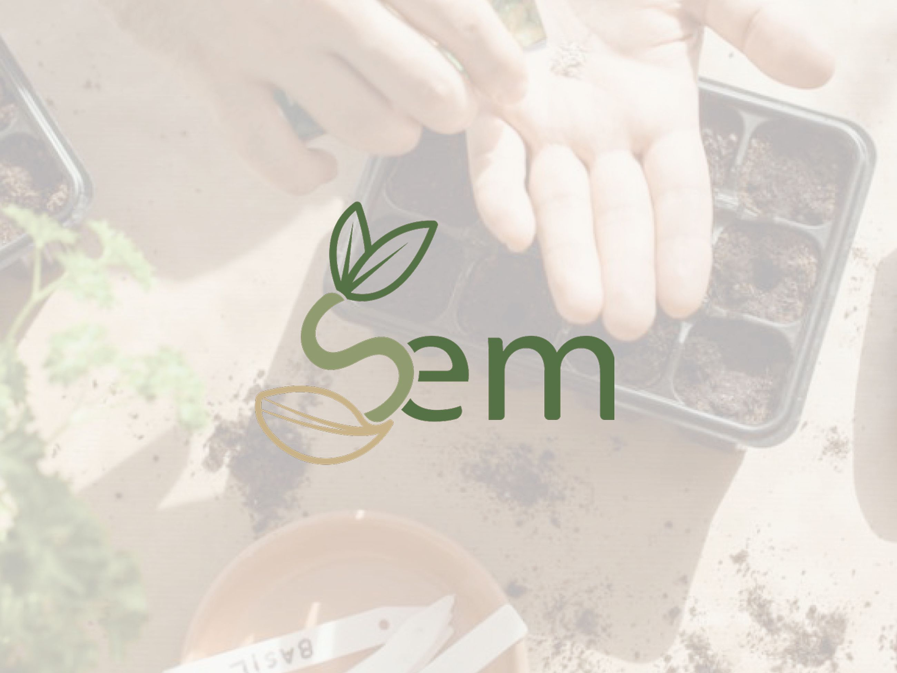
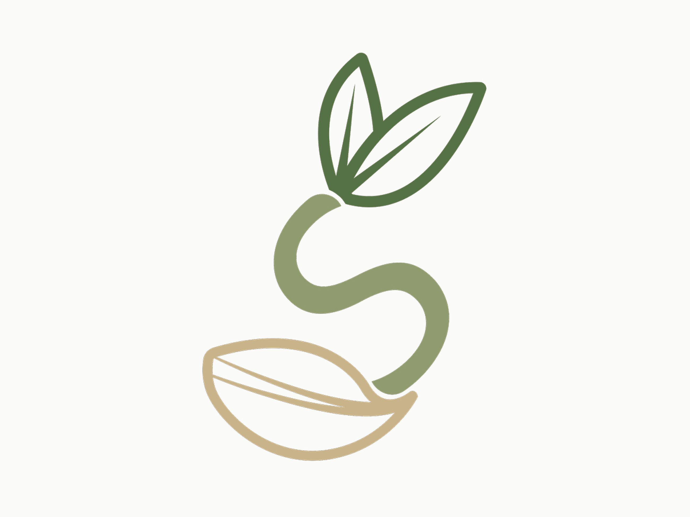
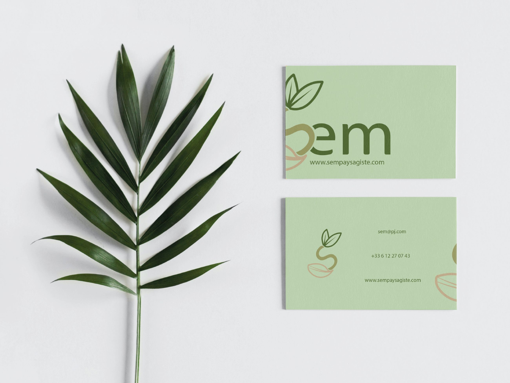
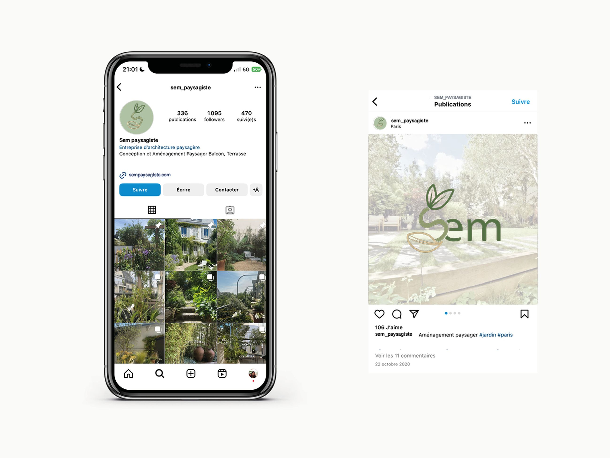
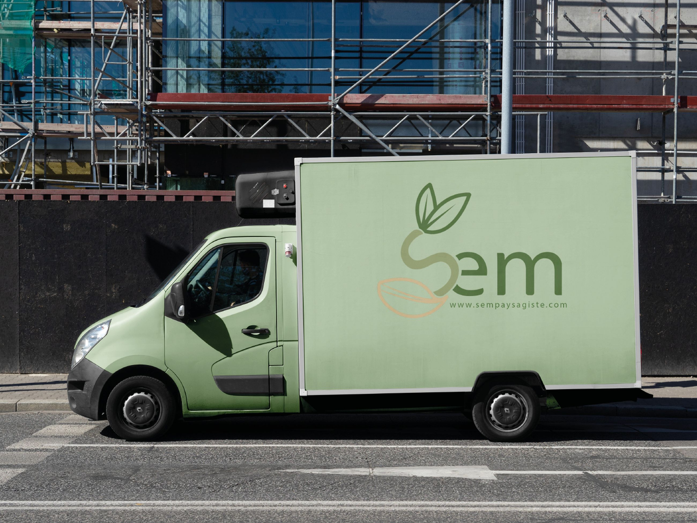

Proposer à une entreprise de paysagistes un système d’identité visuelle intégrant un logotype, une carte de visite et une facade de camion. La création de mon logotype s’est faite en lien avec la graine, planter celle ci pour évoluer et proposer un engagement créatif et écologique au recepteur.




